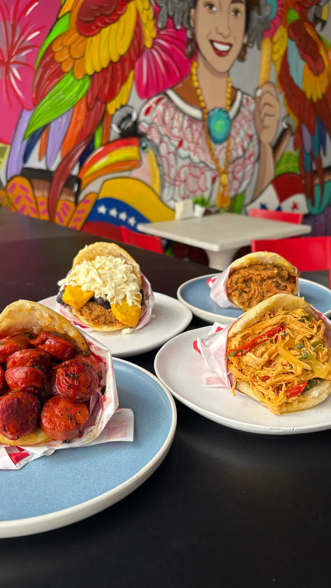
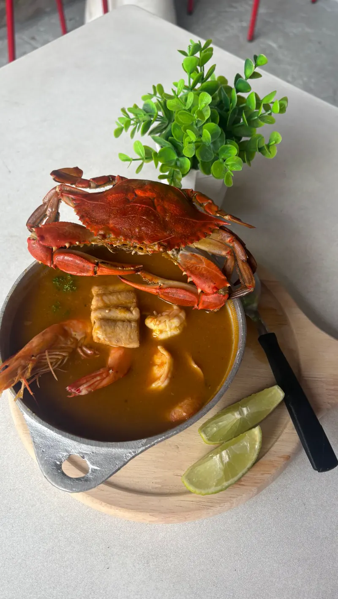
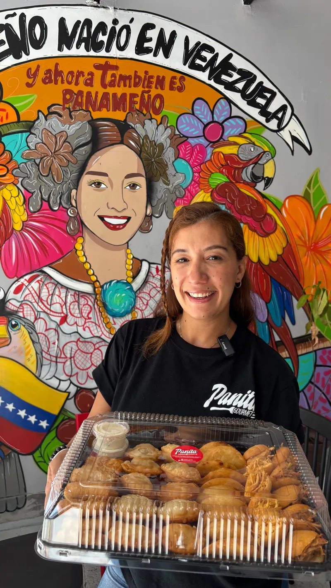

Empanadas venezolanas
Lo que más mencionan en las reseñas. Masa de maíz dorada, crujiente por fuera y bien rellena.
Lunes a sábado 8:30 a.m. a 4:30 p.m.
Cocina venezolana, panameña y americana en San Francisco. Desayunos, almuerzos, panadería y café, atendidos por sus dueños.

Un poco de Venezuela, un poco de Panamá y un poco de todo lo que se te antoje a la hora del desayuno o del almuerzo.
Lo que más mencionan en las reseñas. Masa de maíz dorada, crujiente por fuera y bien rellena.

Para comer aquí o llevar congelados a tu fiesta.

Cocina panameña, venezolana y americana, con opciones vegetarianas.
Panadería internacional para el desayuno, la merienda o para llevar a casa.

El compañero de cada empanada.

Para los que le ponen picante a todo.
Lo que ves en nuestro Instagram es lo que encuentras en el mostrador de Plaza Fundadores.





La gente vuelve por las empanadas, por los buenos precios y porque aquí te atienden los dueños como si fueras de la casa.
4.9
en Google, con 13 reseñas
Esto es lo que más se repite en las reseñas de Google y Tripadvisor.

Te reciben con calidez y te hacen sentir en casa desde que entras.
Te explican el menú, te recomiendan y están pendientes de tu mesa.
Recetas con el gusto de casa, y las empanadas se llevan los mejores comentarios.
Comes bien sin gastar de más, algo que mencionan una y otra vez.


Para fiestas y reuniones
Llévate paquetes de tequeños congelados y cocínalos en casa cuando llegue la gente. Escríbenos y te contamos qué paquetes tenemos disponibles.
Cargando mapa. Si no aparece, usa el botón “Cómo llegar”.